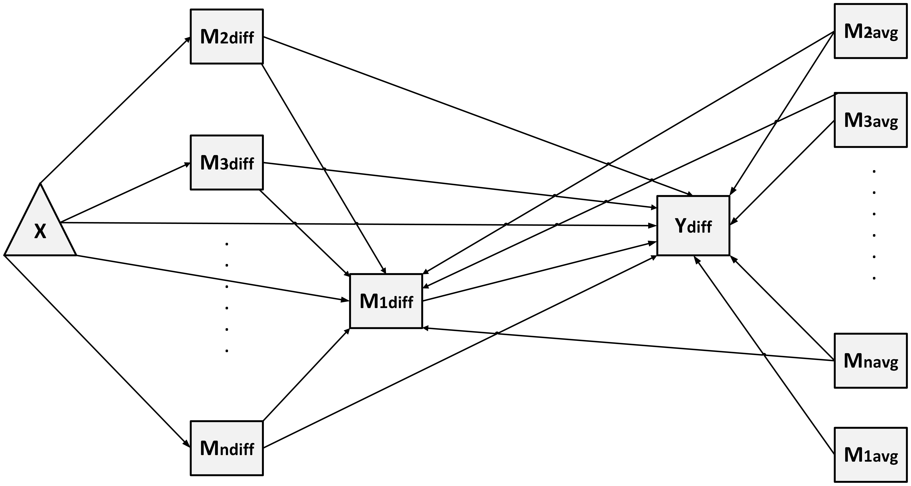

Introduction
The
GenerateModelPC function dynamically generates a
Structural Equation Model (SEM) formula to analyze models with multiple
parallel mediators influencing a single chained mediator for ‘lavaan’
based on the prepared dataset. This document explains the mathematical
principles and the structure of the generated model.

1. Model Description
1.1 Regression for
and
For a single chained mediator
and
parallel mediators
,
the model is defined as:
Outcome Difference Model
():
-
Mediator Difference Model
():
- For the chained mediator
():
- For the parallel mediators
():
Where: -
:
Direct effect of the independent variable. -
:
Effects of the chained and parallel mediators. -
:
Moderating effects of mediator averages. -
:
Residuals.
2. Indirect Effects
For each mediator, the indirect effects are calculated as:
-
Single-Mediator Effects:
- For the chained mediator:
- For the parallel mediators
():
-
Parallel to Chained Path Effects:
- For paths from the parallel mediators to the chained mediator:
-
Total Indirect Effect: The total indirect effect is
the sum of all individual indirect effects:
3. Total Effect
The total effect combines the direct effect and the total indirect
effect:
Where
is the direct effect.
4. Comparison of Indirect Effects
When comparing the strengths of indirect effects, the contrast
between two effects is calculated as:
-
Indirect Effects:
-
Comparisons:
5. C1- and C2-Measurement Coefficients
Definitions
C2-Measurement Coefficient
():
C1-Measurement Coefficient
():
-
Mediator
:
-
Mediator
:
-
Mediator
:
-
Parallel to Chained Path
():
-
Parallel to Chained Path
():
6. Summary of Regression Equations
This section summarizes all equations used in the model:
This comprehensive approach supports models with parallel mediators
influencing a chained mediator, enabling detailed analysis of their
effects and interactions.